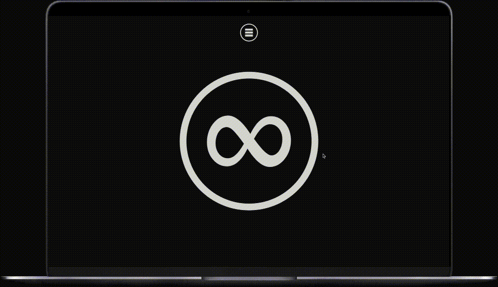

프리라이팅에 적합한 글쓰기 앱 Flowstate (Mac OS X 추천앱)
세상에서 가장 위험한 글쓰기 앱
글을 쓰는 데 있어 가장 어려운 일은 무엇일까요? 바로 글을 쓰기 시작하는 일 입니다. 한번 글을 쓰기 시작하면 어떻게 어떻게 쓰게 되지만, 아무것도 없는 백지 위에 무언가를 쓰기 시작한다는 행위는 쉬운 일이 아닙니다.
글쓰기 연습하는 방법 중에 프리라이팅 (Free Writing) 이라는 방법이 있습니다. 일정 시간을 정해놓고, 내 머리 속에 있는 생각들을 여과 없이, 망설임없이 써내려가는 방법입니다. 저는 이 방법을 굉장히 좋아합니다. 왜냐하면 글을 쓰는 연습도 될 뿐만 아니라 머리가 복잡하고 마음이 답답할 때 프리라이팅을 통해서 다 털어버리고 나면 마음이 후련해지더군요. 프리라이팅의 진짜 매력은 이런 게 아닐까 싶기도 합니다.
Flowstate 는 프리라이팅을 연습할 때 딱맞는 앱입니다. 적다가 5초만 망설이게 되면 적었던 내용이 모두 사라지기 때문에 ‘세상에서 가장 위험한 글쓰기 앱’ 이라고 합니다만, 프리라이팅에는 최적화되어있죠. 무언가 체계적인 글을 쓴다거나 고심을 하며 글을 쓰는 용도로는 맞지 않습니다. 간단한 초안을 만들 때 쓸 수도 있지만 그 용도로는 굳이 이 앱을 사용할 필요가 없죠.

앱을 켜면 얼마동안 글을 쓸 것인가 타이머와 글꼴을 설정할 수 있습니다. 그 외에는 그냥 제목만 넣으면 바로 글을 쓸 수 있습니다. 아무것도 없는 화면에서 지정한 시간 (기본 5분) 동안 내 머리 속에 떠오르는 생각들, 내 마음 속에 담아두었던 말들을 쭉 써내려가는 겁니다. 아무 방해 없이 말이죠. 잘못 썼다고 수정할 필요도 없습니다. 어떻게 보면 생각나는 대로 적는 의식의 흐름 기법이라고나 할까요. 5초 동안 적는 것을 망설인다면 그동안 적었던 것들이 사라집니다. 처음에 설정한 타이머도 처음으로 돌아갑니다.

물론 단점도 있습니다. 설정한 시간이 흐른 뒤에는 5초의 제약 없이 마음대로 글을 쓰고 편집할 수 있는데요, 이 글들을 관리하는 기능이 부족합니다. 폴더나 카테고리화 할 수 있는 것도 없고 검색 기능도 부족합니다. 또 암호를 이용해서 잠금 기능이 있으면 더 좋을 것 같습니다. 프리라이팅만을 위한 앱은 것 같네요. 어차피 프라이이팅한 글 외에 체계적으로 글을 쓰려면 다른 툴을 써야할 테니까요.
그렇다면 프리라이팅만을 위해서 이 앱을 구매 ($10.99)해야 할까요? 현재 33% 세일 기간입니다. 글을 잘 쓰고 싶은게 글 쓰는 것이 망설여지신다면, 이 앱을 통해 새로운 글쓰기 경험을 해보시는 것도 좋을겁니다.
프리라이팅에 적합한 글쓰기 앱 Flowstate (Mac OS X 추천앱)